Type
Geometric sans-serifs
Structural, geometric letterforms that feel built rather than drawn.
Details
Timeline: Spring 2026
Role: Designer (individual project)
Deliverables: Poster, booklet, motion piece
Tools: Illustrator, InDesign, After Effects
Summary
Design Hero is a three-part project about a designer who inspires me: Na Kim, a graphic designer, artist, curator and educator based in Berlin and active in Seoul. Across a typographic poster, a 16-page booklet and a type-based motion piece, I built one visual system from her work to introduce her to people who have never heard of her.

Overview
Who is Na Kim?
Na Kim doesn’t stay in one format. She translates her work across books, exhibitions, installations and spaces, and treats collecting, arranging and building rules as a creative process rather than simple documentation. Her work often captures moments and memories from her everyday life.
She’s my design hero because her visual style has stayed recognizable across many years and many forms, which is something I want to build as a designer. Her work looks very structured at first glance, but it’s also personal.
Research
I made mood boards of her work and sorted them by category: print and publication, installation, space, product and exhibition design. Looking closely, I found a consistent language that guided all three pieces.
Type
Structural, geometric letterforms that feel built rather than drawn.
Color
Saturated red, blue and yellow, and high-contrast black and white.
Shape
Squares, circles, triangles, stars and diamonds, arranged in grids.
01 Poster
Typographic poster · 17.5 × 28 in
The poster had to be mostly typographic, so I designed my own lowercase typeface using only circles and rectangles, the shapes I saw most in Na Kim’s work. Each letter sits in a 5 × 8 grid of 3.5-inch squares, spelling out one of her ideas: “simple form, complex idea.”
Fine patterns of dots, lines and dashes fill the grid like texture, with bolder ones kept behind the letters so they never compete with legibility. For the “K” in her name, a classmate pointed out that the straightened leg resembled a Korean character, a nod to her background that made me keep it.
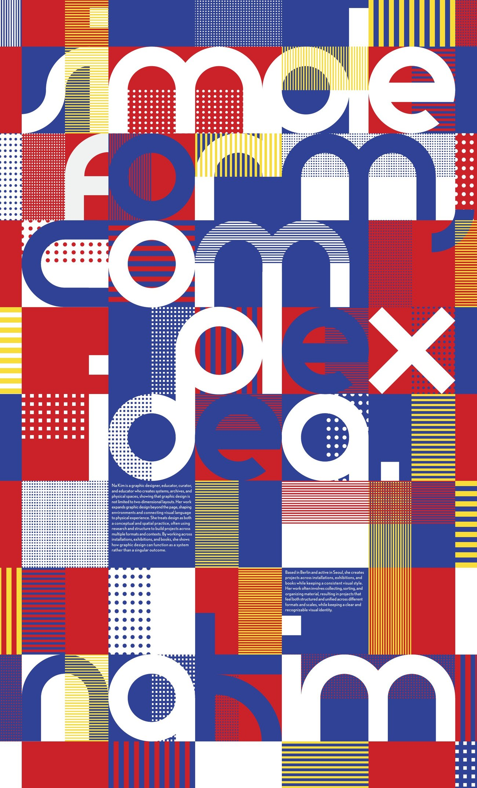
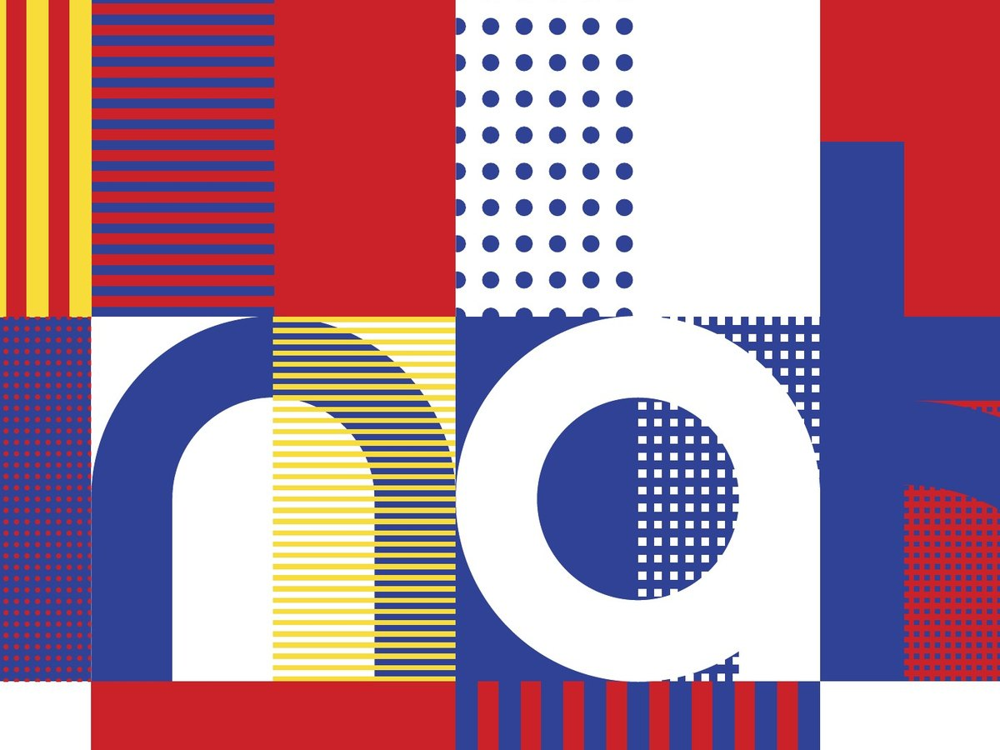
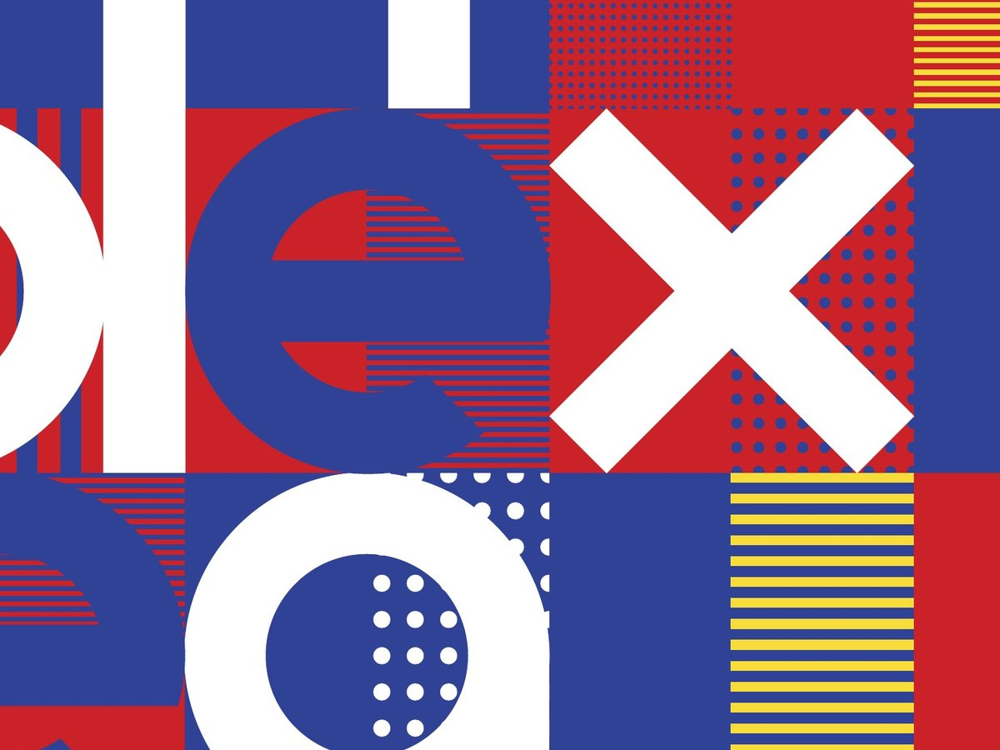
02 Booklet
16-page booklet · 8.25 × 10.5 in
The booklet introduces Na Kim to someone who knows nothing about her. I built the story around what sets her apart: the breadth of her practice and how she carries her graphic systems into publications, exhibitions and spaces. It moves from an introduction and timeline into her print, space and product work, LOOM (her home, gallery and studio in Berlin) and her exhibitions.
My early spreads read more like posters than a book, so I reset with a consistent three-column grid, Futura paired with Instrument Serif, one main color per spread and numbered captions. Her work stays unaltered and in focus. The covers carry over the poster’s square and quarter-circle modules, with her objects in black and white.
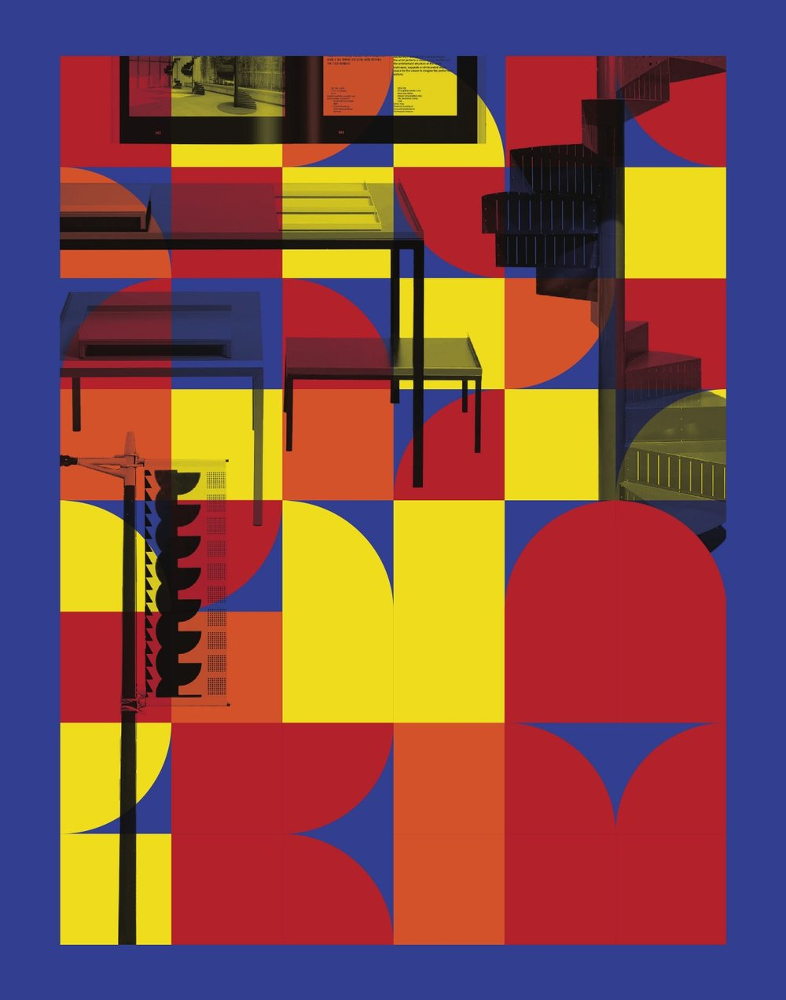
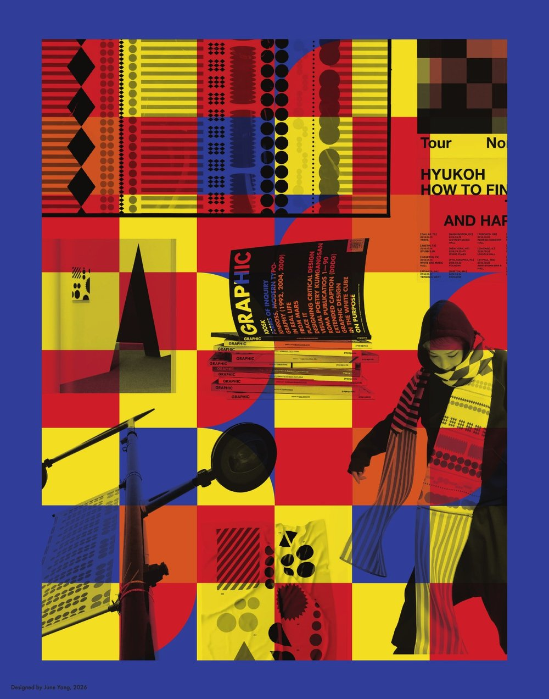
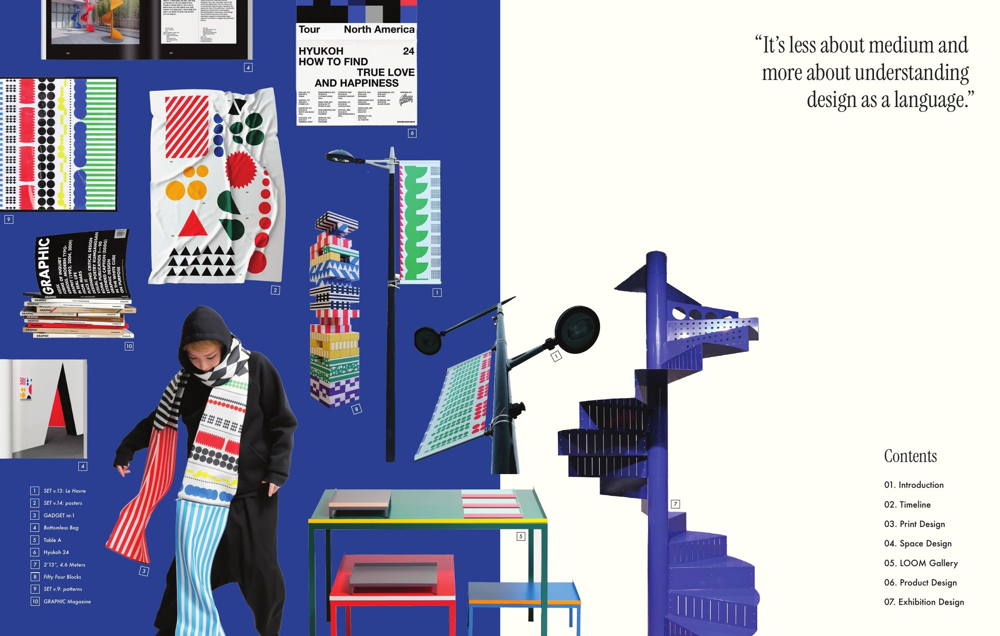
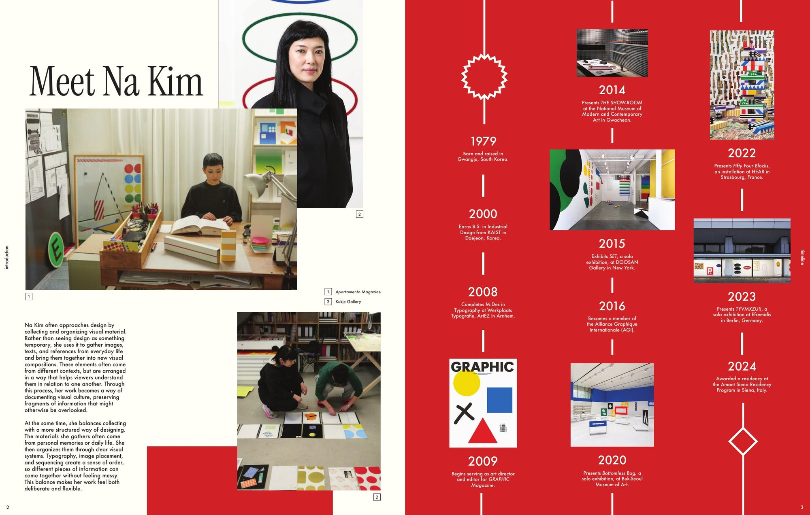
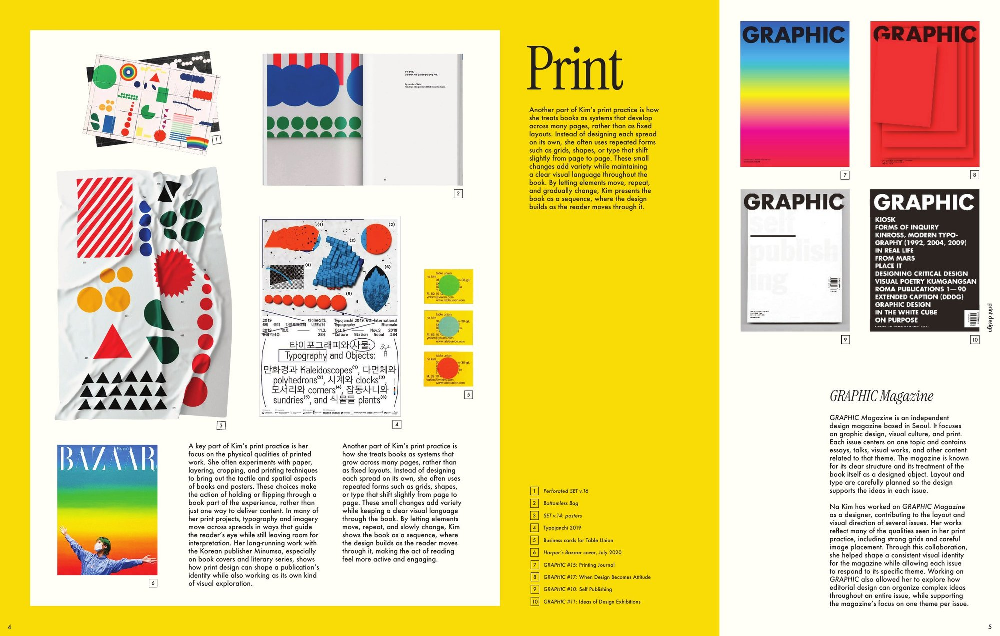
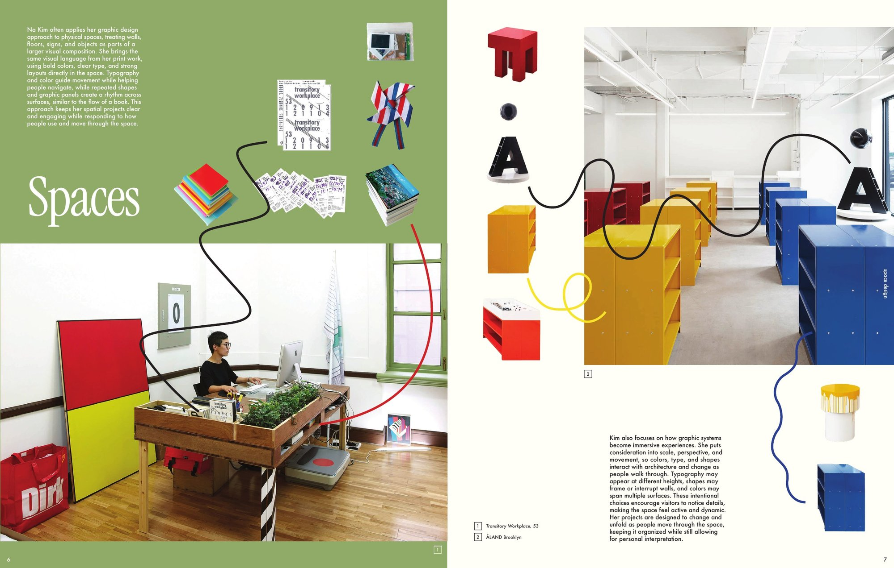
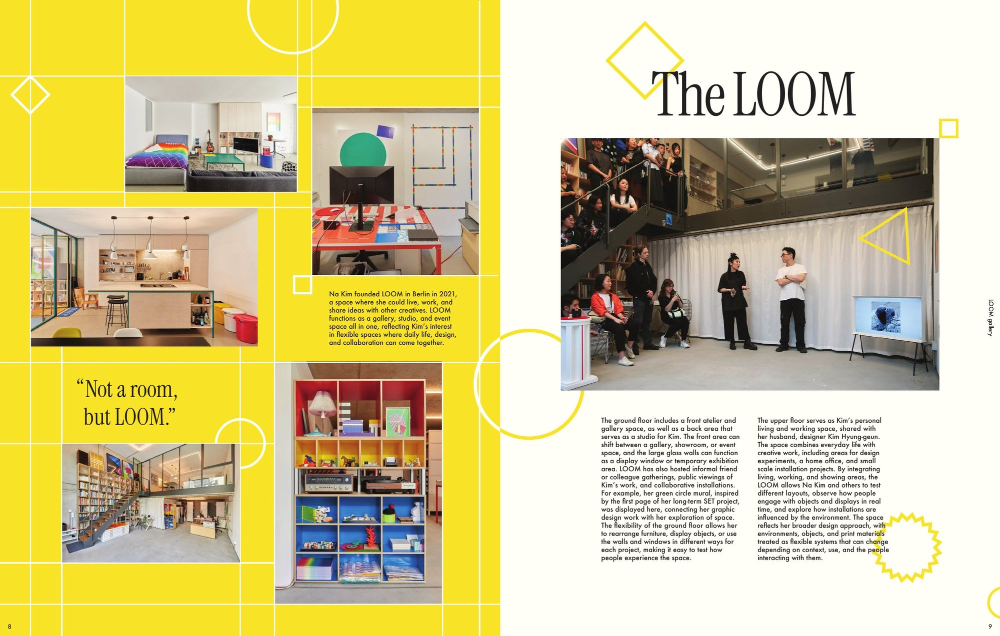
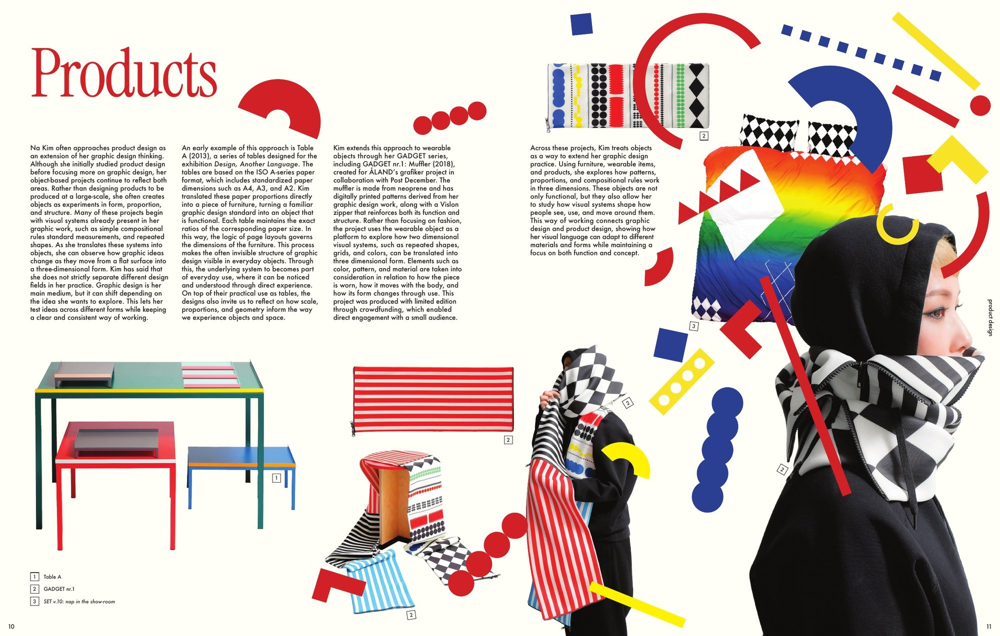
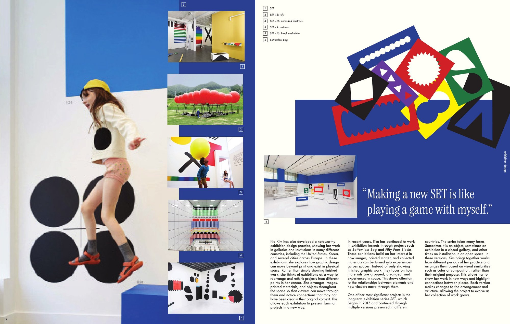
03 Motion
Type-based video · 1:12
The video is built around Na Kim’s own words about collecting. Most of her interviews are in Korean, and the Korean clip explained her philosophy far better than the English one I found. So I translated it and recorded an English voiceover myself, which let viewers read and hear the same words and gave me control over pacing.
Type is part of the motion, not a subtitle. A camera frame flashes on “again and again,” her living space at LOOM breaks down into the simple shapes she uses, and those shapes fall right to left into place before fading to reveal her walking through her exhibition.
Reflection
What I learned
Poster
My first sketches were illustrations with type added. Building letters from simple shapes taught me to design with type first, and that constraints make a system stronger.
Booklet
Spreads that each tried to stand out felt like a magazine. Consistent grids, type and pacing let the work lead, and showed me how a reader moves through a sequence.
Motion
Cutting scenes that interrupted the rhythm, like page turns and a dramatic reveal, made the video stronger. Voice, pacing and motion have to work as one system.